Neural Style Transfer
Author: Kelvin Kang
Neural Style Transfer model takes in a content image, e.g. a real photo of a building, and a style image, e.g. a famous painting, and transfer the style from the painting to the content image.
Neural Style Transfer utilizes a pre-trained network, such as VGG19, to extract features from both the content and style images. The model then optimizes for both content and style loss. The content loss is using perceptual loss, i.e. L2 norm of the features space of the first few activations of the images when passed through the pre-trained VGG19. The style loss is an L2 norm of the gram matrix of the features space.
Optimizing the content loss at earlier layers create a better reconstruction of the original image. Optimizing the later layers create a reconstruction that only captures higher-level objects, such as the main outline of the image and losing the finer details such as colors. The image below shows the different result of the reconstruction at early, middle, and later layers.
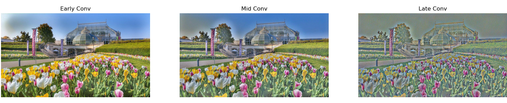
My favorite layer to use for content loss is conv_5, because I find that it is better to only have the higher-level features from the content when using Neural Style Transfer. This is because I want the finer details such as colors to becoming from the style image instead. The reconstruction done below shows that it holds most of the major outlines of the phipps building, but it has a greenish tint and the colors of the flowers has a lower saturation. White noise artifacts appeared in the reconstructed image. But the two images reconstructed from different initial noise images look almost identical. This is probably because the perceptual loss have the same final optimized values regardless of the initial image. Perceptual loss has a spatial component to it.
 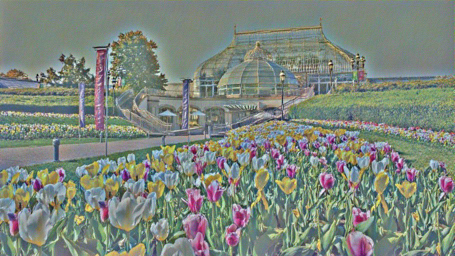
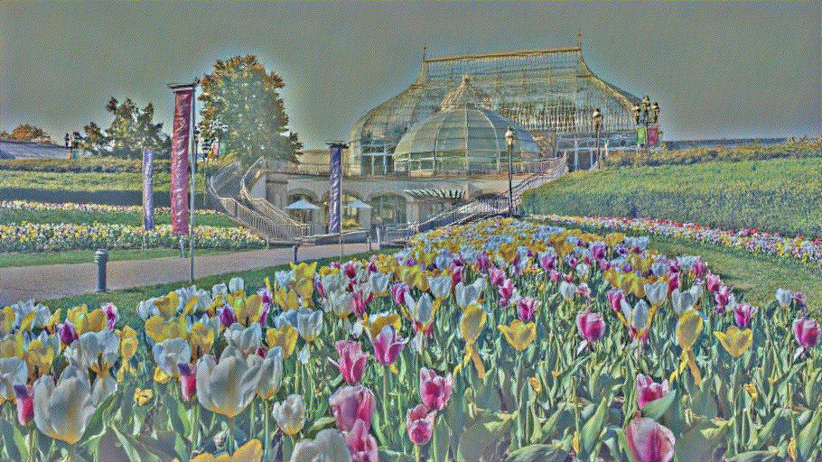
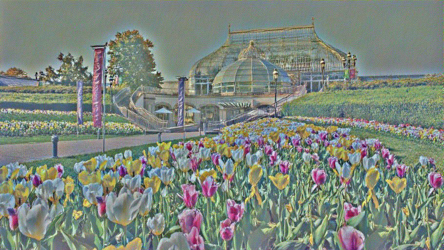
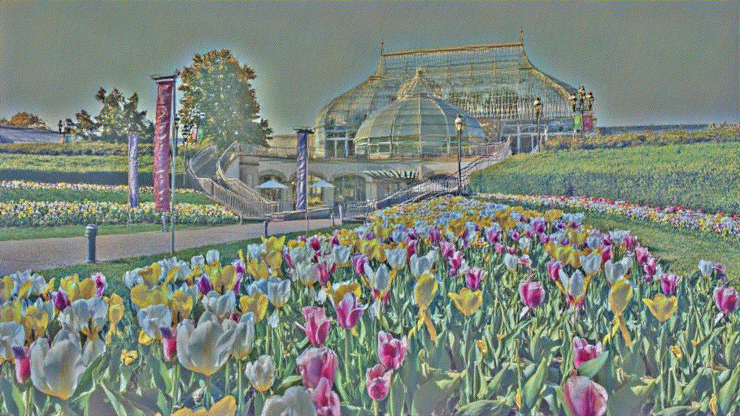
Optimizing the style loss at later layers creates larger styles, you can see textures such as brush strokes. But the earlier layers do not have the strokes as it has not seen a large enough part of the style image from its receptive field. But since the later layers have more higher-level features, it is lacking good colors. So I pick ['conv_2', 'conv_3', 'conv_4'] as I find it is a good balance of the shape texture and the vibrant colors from the style image.
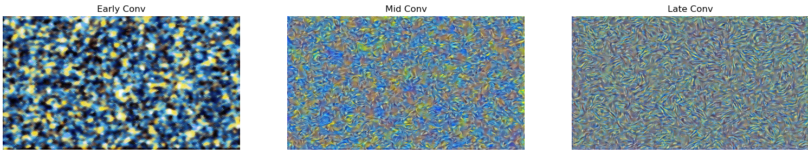
Below are the two textures generated from two random noise images. Unlike the image reconstruction, you can see that the two images are different on the pixel level. They are very similar in the textures that were generated, but they are still obviously different. This is probably because the style loss uses the gram matrix, which is an aggregate metrics over the entire image. Hence, there is nothing in the loss function that enforces spatial consistency across different inputs unlike perceptual loss in content reconstruction.
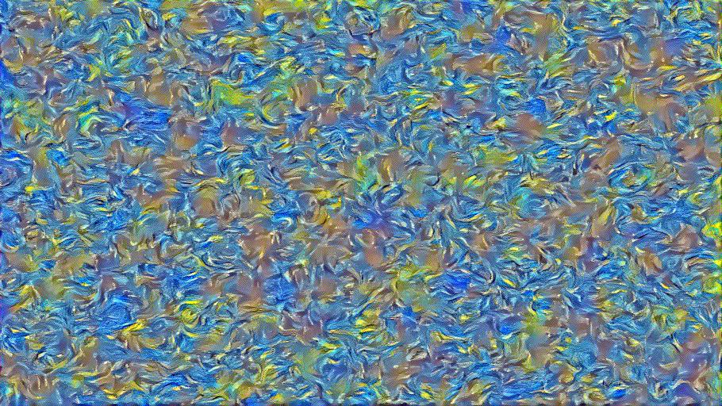 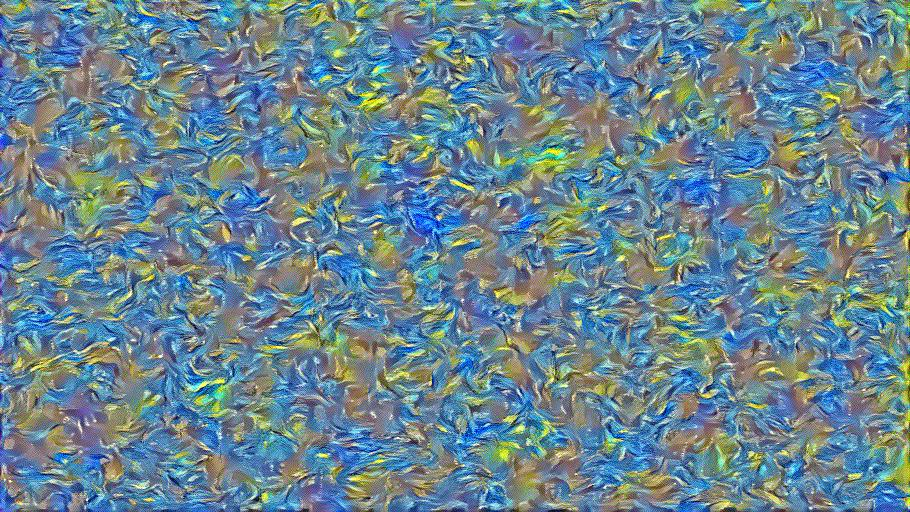
The style transfer pipeline starts with a pre-trained VGG19 net. I chopped off the layers after 'conv_5' as they are unnecessary for this task. Then I insert PyTorch modules for the Content and Style loss. The initial, content, and style images are then passed to the network to extract their features and gram matrix for loss calculation. LBFGS optimizer is used to iteratively optimize the initial image. I did not use a for loop to set the number of iterations, I instead change the max_iter of the LBFGS and lowering its convergence threshold to force it to keep iterating until max_iter is reached.
Below are the reconstructed images using noise initialization
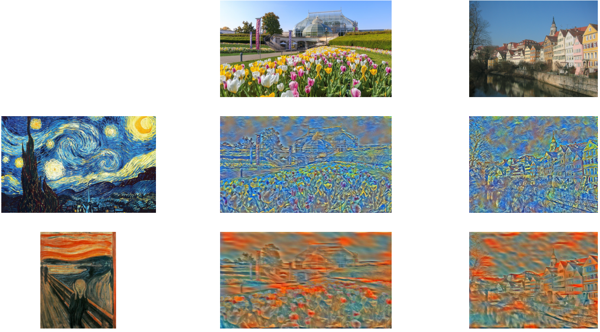
Below are the reconstructed images using content image as initialization
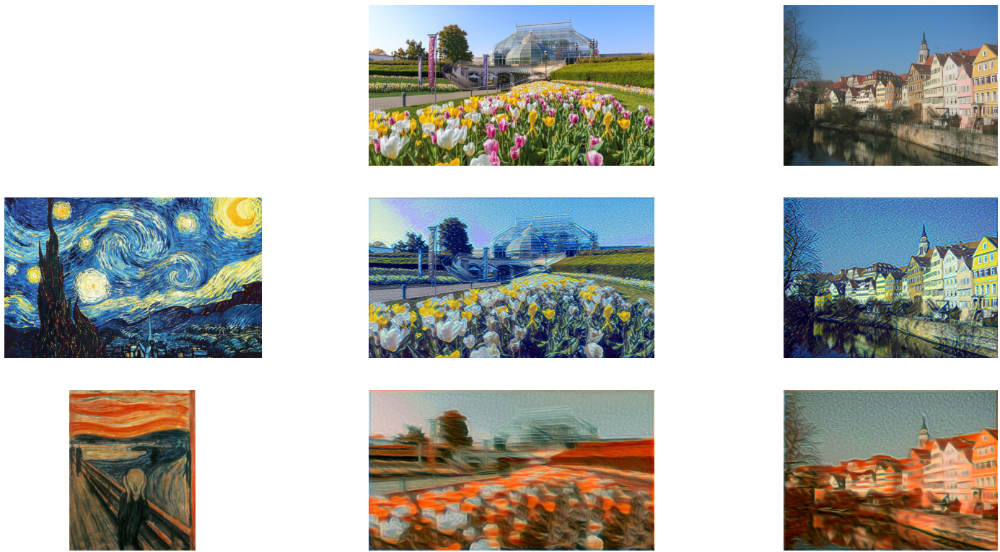
Using content image as initialization produces better recon images in my opinion, I can still clearly see the content high-level features, but it is infused with the style from the style image. The noise initialization images cannot seem to produce this level of quality. Initially, I thought that I just need to lower the style weight, but it still fails to produce good images. The content initialization reconstruction takes a longer time, almost double, than that of noise initialization reconstruction.
Below are reconstructed image of style transfer from a Van Gogh painting to a Pittsburgh skyline
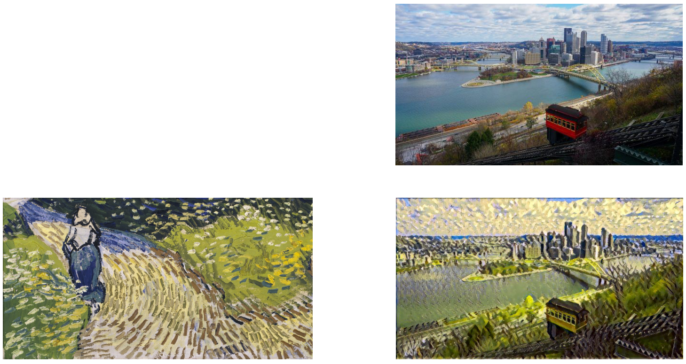
I applied the style transfer on my blended image from HW2 Poisson Blending. The result is not very good, but it highlights the limitation of the Neural Style Transfer. The style image painting does not have bold strokes or colors, creating mostly shades of beige. The content image also has words and lines, that produces strange artifacts when style is transfered on them.
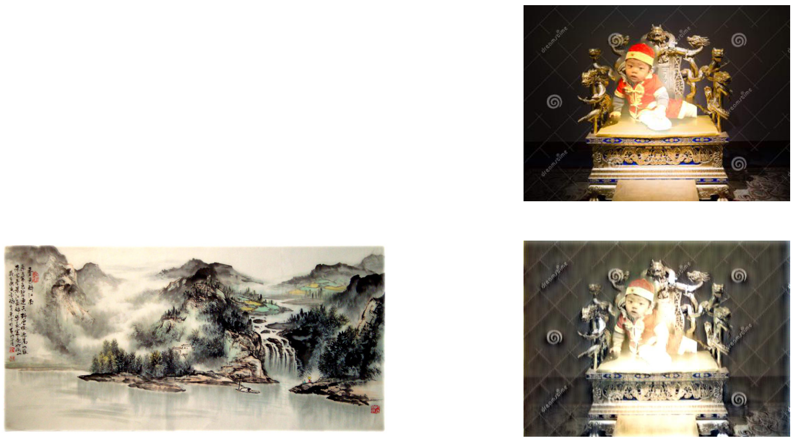